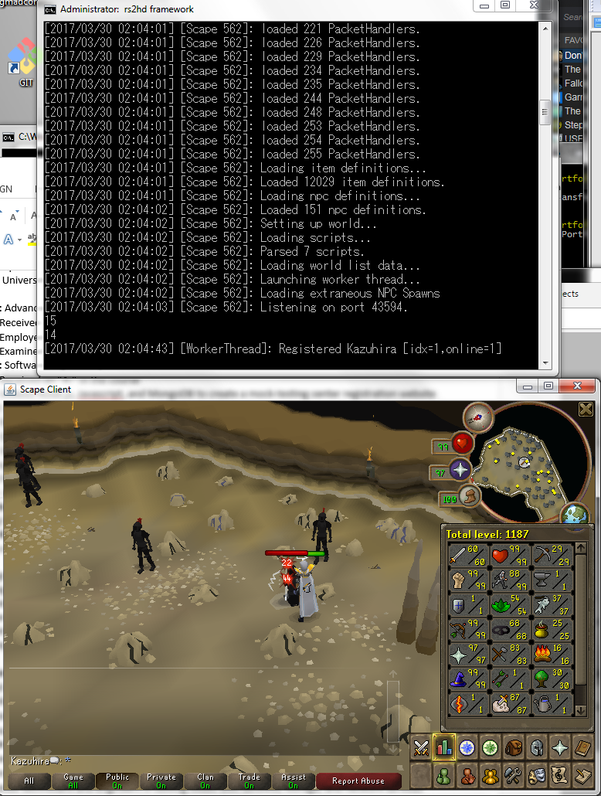
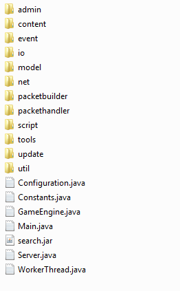
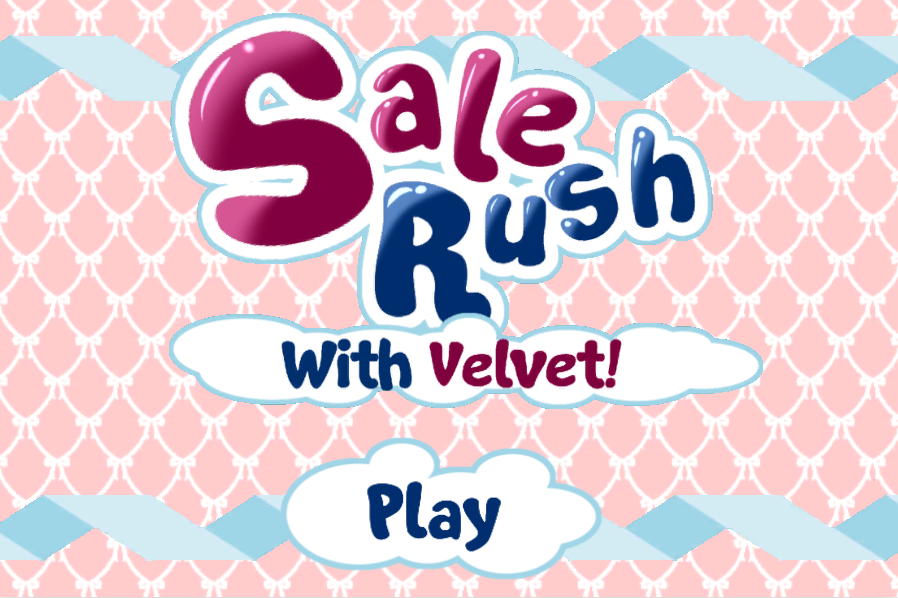
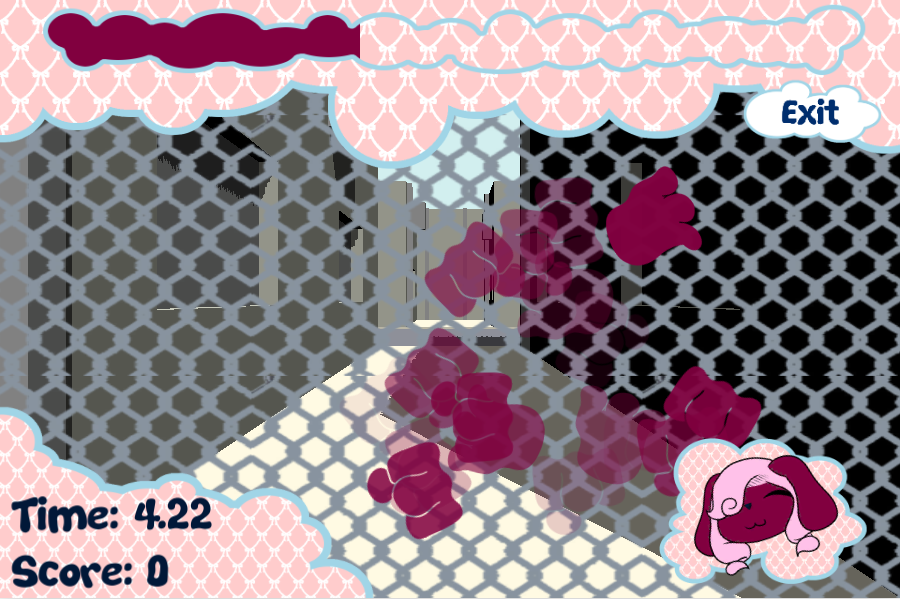
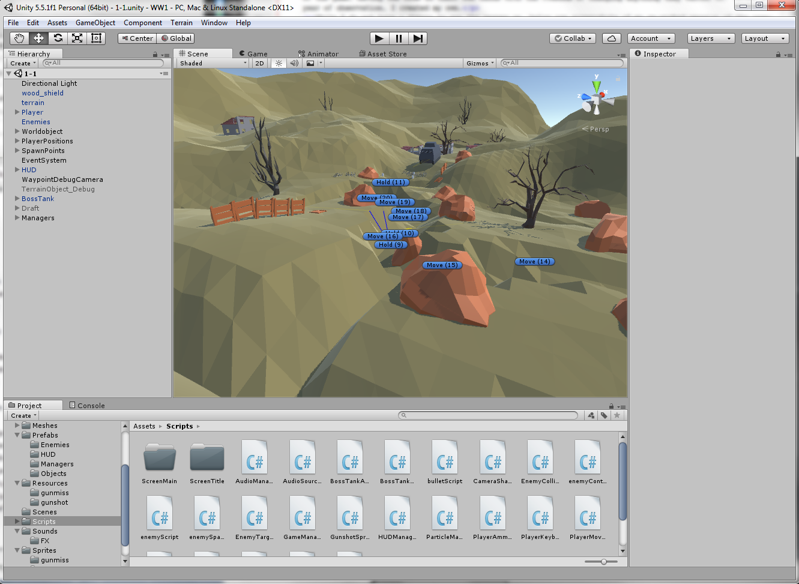
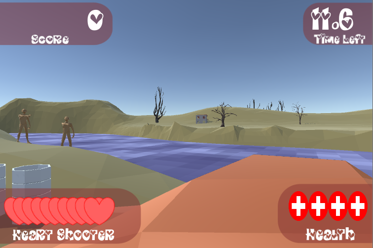

Projects
Runescape Private Servers
My experience as a game programmer and developer began in 2008 when my cousins and I played Runescape in tandem. However, we all knew that Runescape was extremely time-consuming, and one day we managed to find something that would change my career choice onto the path I follow today: Runescape Private Servers.
We discovered a world of developers that dedicated their time to running their own license-expired versions of the game, having the code in their own hands with the freedom of changing anything they wanted to. After a year of observation, I created my own.
While I do not have a domain to run the server on, below are screenshots of my re-worked version of the game:
 
As it can be seen, this project is an amalgamation of many packet handlers, several scripts, an extensive library of definitions, and over thousands of lines of code. While I have not written every single line, I play a big part of keeping maintenance of each of these bodies.
Before I began experimenting with my own version of the game, I once worked with a different server by the name of PKMadness. It is no longer around, but during its day it had constant player base of at least 150 players. I worked among a team of four other people in order to communicate with our player base to learn what bugs were present in the game, and what features to add. At the same time, these players would provide us with donations for our efforts.
Sale Rush
In the first semester of my senior year, I was on track to take a course outlined in my resume: Advanced Game Programming. In this course, we were to deal with learning the history of game development, programming, and modelling. More importantly, our main assignment for the entire semester was to create our own Unity web-game. My and my partner's game: Sale Rush, was a result of that project.
Since the beginning of this project I wanted to construct something around one of my own made characters from my time of drawing: Velvet. However, more importantly I had to make a game that would not only be a friendly environment to program in, but a game that could be easily played.
The game relies upon a feedback system set up by three main classes that interact with each other. Minigames could easily be constructed through this system, which allowed me, and my partner for this project, to quickly make components for our game.
I took complete charge of managing tutorials and player feedback, with my previous goal in mind. While they are still not eloquent, developing a game with these concepts in mind are key. Additionally, I took charge of the entire art design and asset creation, using what skills I had to make the game aesthetically appealing.
You can play the game for yourself on the sidebar to the right! (Doesn't work in Chrome)


Make Love Not War
This game was my latest project that is acting as my assignment for my senior project. While it is not finished, the progress my partner and I have made is considerable. This game is meant to be an arcade shoot-em-up that focuses on World War I, with a spin.
Unlike Sale Rush, this game focuses on an Event based system that allows us to record the actions that occur in the game in order to quickly debug current bugs, and create future interactions in-game.
Much like Sale Rush, I took the responsibility of setting up the game design, creating art and assets for the game. This included map design, terrain editing, modelling, HUD design and proposed game mechanics.
Because the game is unfinished, I regretfully inform that one cannot play this game yet. Additionally I am not even sure if we're allowed to disclose game-play to public.


Genius Design Lab
As part of my work in Genius Design Lab, I was tasked with not only directing and teaching groups of 4-12 children in learning about Video Game Design, I was also responsible for creating the entire curriculum.
This included teaching direction, and possible projects. Every game project that the students would take part in was constructed by me in order to ensure that it would work, then was recreated by the student using the format I had set up.
For the students' freelance projects, I was further tasked with assisting them with writing more complex scripts. In total, during my employement in Genius Design Lab I must have created more than 8 unique games.
Post Reality
Among all my time in The Glimpse Group, perhaps the most intricate and care-given project I've worked on is Post Reality. It is an augmented reality presentation creator driven by an online website editor and a mobile application interface.
The work experience I gained working on this project was truly mind opening because everyone that worked on the project was integral: one person worked on setting up back-end endpoints, one person worked on the online website editor, one person worked on UI/UX, and I personally worked on the mobile application. We all had to play our part and synchronize our work in order to bring the total application to where it is today.
The application itself has logging/signing-up capabilities; taps into a database of presentations from a back-end; can comment and rate each individual presentation; views each presentation in a variety of ways; shares presentations and comments with other users; and notifies users when their presentations have been viewed or rated. Because of the multitude of features the application had, I learned about many libraries and integrating them into Post Reality.